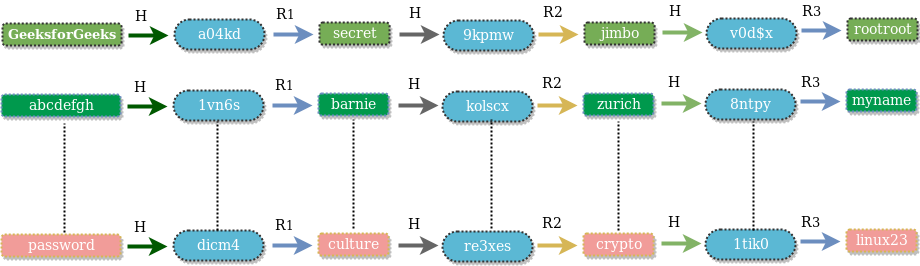

Most of the web applications require their users to authenticate themselves by asking them username and password. They compare the user supplied credentials with the data stored in their database and if the credentials match, the user is granted access. Sounds good! But what will happen if the database in which the website is storing your passwords gets compromised?
This article covers various techniques of storing passwords in the database.
According to naked security, 55% of the net users use the same password for most of the websites! It implies that if the website storing your password in plain text gets compromised, hacker is not only able to gain access of your account on that website but all your social media, email, forums etc accounts in which you are using the same password!
Well, many must be wondering that if the database is exposed to the hacker then what can be done? The hacker has access to all the information. WRONG!! There are many ways through which the process of retrieving password from the database can be made cumbersome for the hacker. Even then the developers tend to ignore the basic guidelines and store the passwords in plain text.There are over 30% websites which store your passwords in plain text (including some reputed sites also). If the website is storing your password in plain text then no matter how strong password you choose, you are not safe!
Storing plain text passwords in the database is a sin.
One might also think that if not plain text then we must encrypt the password and then store. It is also a terrible idea. Encryption functions provide one-one mapping between input and output and they are always reversible. If the hacker gets the key, he will be able to decrypt the passwords. The better way would be to use a one way cryptographic hash function. Hash function provides a many-one mapping between input and output and it is practically impossible to reverse a output. A good cryptographic hash function has lesser number of Collisions (i.e for different input values to the function it is difficult to get the same output). Collisions cannot be completely avoided because of pigeonhole principle. For hashing passwords we can assume that the hash function will generate unique output i.e for no two different passwords we will get a same hash value.
Some of the popular cryptographic hash functions are MD5 and SHA1. Instead of storing plain text password in the database one way is to store the hash of the password. You might be thinking that if we cannot get the actual password back from the hash then how are we going to verify the credentials that the user entered? It’s simple, apply the same hash function on the password which user entered and then compare it with the hash stored in the database. If both hashes match then the user is authenticated (since hash of same input will give same output). Now if the attacker is able to get database access, he will be only able to view the hashed output and not the actual password.
Using cryptographic hash function is better than storing plain text password.
Hackers are smart guys and once they came to know that developers are storing hashed passwords, they pre-computed hash of large number of words (from a popular word list or dictionary words). They created a table of words and their corresponding hashes. This table is known as Rainbow Table and it is readily available online. They can use this table to reverse lookup the actual password by comparing the hashes obtained from the database. Hence it is very important to have a strong password since the possibility of your password appearing in the word list becomes less.

Simply storing the hash of a password is not going to help anymore. Processing power has increased drastically with the introduction of GPUs and CUDA, OpenCL libraries. A fast GPU can generate millions of MD5/SHA1 hashes in one second. Hence a hacker can easily generate large number of hashes by brute-forcing various possible combinations and can compare it with the hashes stored in the database to extract the actual password.
Even hashed passwords are not secure! Surprised?
Don’t loose hope! There is still something that developers can do to keep your passwords away from prying eyes of the hackers. Make the passwords delicious by adding some salt to them! Yeah, right..! Add a salt. A salt is random data that is concatenated with your password before sending it as the input of the hashing function.
For example :
If your password is abc and the salt is !ZaP0#8, the result of hashFunction(‘abc!ZaP0#8’) will be stored in the database instead of hashFunction(‘abc’).
Hence the rainbow table attacks won’t be effective now as the probability that rainbow table contains hash of ‘abc!ZaP0#8’ is meager (because generally rainbow tables are constructed from common words, dictionary words etc). Salt is not stored in the database and only present in the application configuration file which is not accessible to outer world. Gaining access to the source files is difficult than gaining access to the database.
The above salting method is static. We have one fixed salt for all the passwords. To authenticate the user, first concatenate the fixed salt to the user supplied input (password) and then pass the value to the hashing function and compare it with the value stored in the database. However this approach is still vulnerable to brute-force and if the attacker is able to get the static salt he can use the old attack methodology by concatenating the salt in every word.
A better approach would be to use a dynamic salt. For each user a new salt is generated by cryptographically strong random string generator. The password entered by user is concatenated with a random generated salt as well as a static salt. The concatenated string is passed as the input of hashing function. The result obtained is stored in database. Dynamic salt is required to be stored in the database since it is different for different users. When the user is to be authenticated, first the value of dynamic salt for that user is fetched from the database, it is concatenated with user supplied input and the static salt. The result is compared with the hash stored in the database.
If the database is compromised the hacker will not only get your password hashes but also the dynamic salt used. You might be wondering then what is the advantage of dynamic salt over static salt if attacker has dynamic salt? Even if the attacker has dynamic salt he needs to create a new hash-table (or rainbow table) for each and every user present in the database (as per dynamic salt). This is a lot more expensive operation than creating just one table for all the users.
The above approach is quite good to slow down a hacker. However it is recommended to use algorithms like bcrypt and scrypt instead of MD5/SHA1. Bcrypt is a hashing algorithm based on Blowfish. It requires you to specify a cost/work factor. The work factor makes the overall process slower and hence time taken to generate hash-table would increase multiple times.
References :
https://nakedsecurity.sophos.com/2013/11/20/serious-security-how-to-store-your-users-passwords-safely/